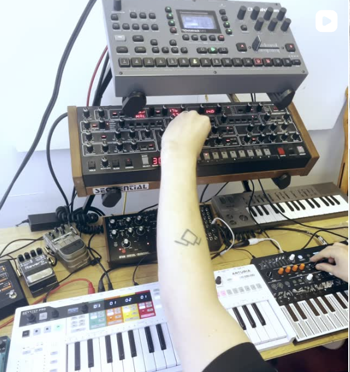
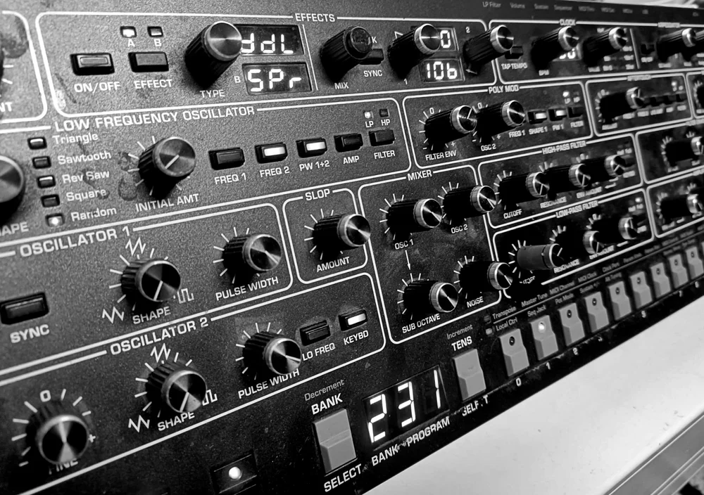
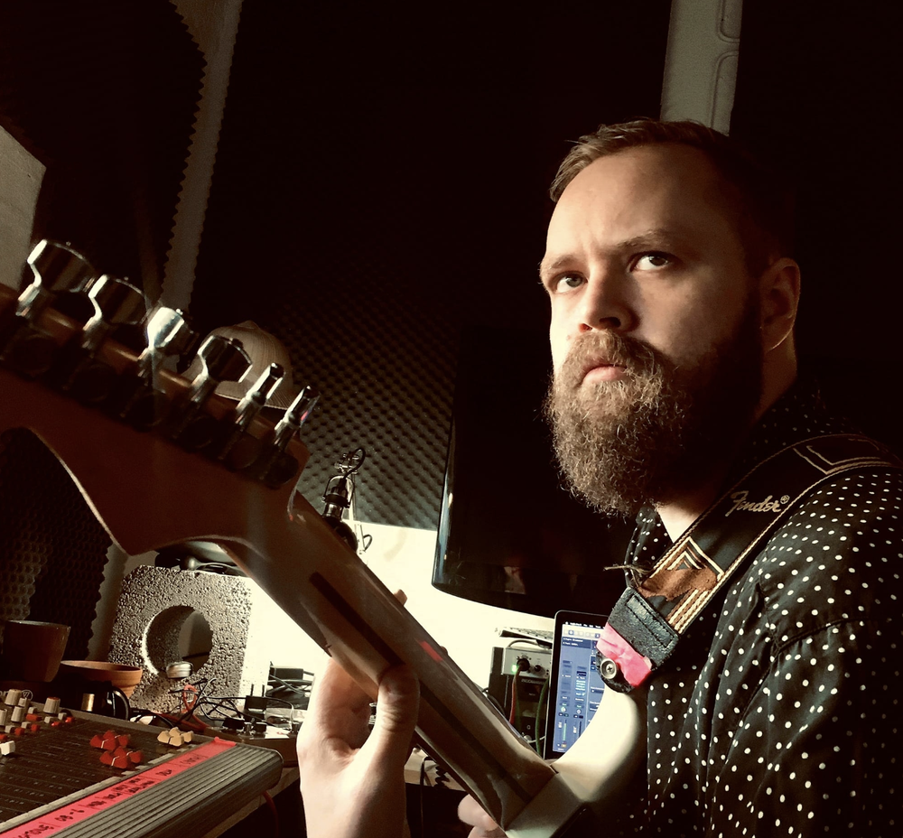

Music Production
I produce music across different genres and without limits of the concept, so it can be for artists, ads, films, or any creative project. From clean mixes to full-on production, I can make sure every sound hits just right.

Sound Design
Over the years I’ve created sound design for games, theater, ads, films, art performances and pretty much anything that needs a unique sound. Got a project in mind? Let’s make it sound amazing.

Guitar Lessons
I teach beginners and advanced players of all ages.
Been doing this for years, so I’ll help you learn
the basics, get better technique, or learn some
killer solos.
We can have the sessions in my studio at Vuosaari,
Helsinki.
Hit me up and let’s jam!
Starting from 45€ / 45min
Programming
I'm currently studying programming and exploring how coding can be used to create websites, software, and other digital tools. This website is made by me using HTML, CSS, and JavaScript.
Who am I?
I’m Samuli Kivelä (MMus), a musician, sound designer, and music producer living in Helsinki.
I’ve got loads of experience in different music styles, and I love creating unique sounds for artists, shows, and all kinds of media.
My work goes from composing and producing tracks to designing sound for theater, film, and other cool projects.
Besides that, I’m an active musician and sound designer with theater group Helsinki98, working on some pretty exciting and experimental projects.
I studied at the Sibelius Academy, so I’ve got a solid music background, but I always keep it fresh and true to my own vibe.